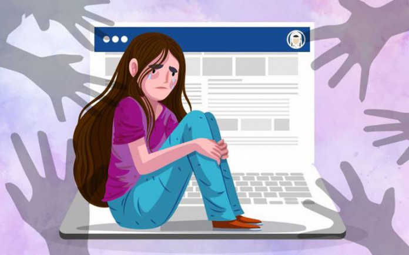

Efectos de la ansiedad por la tecnología
La presión constante para estar conectado y gestionar información digital puede llevar al agotamiento emocional y físico, impactando negativamente en la salud y el bienestar general.
La exposición a pantallas y la actividad mental activa antes de dormir pueden dificultar el sueño, causando problemas para conciliarlo, interrupciones nocturnas y una calidad de sueño deficiente.
Aunque la tecnología facilita la comunicación, el uso excesivo de medios digitales puede reducir las interacciones cara a cara, llevando a sentimientos de soledad y desconexión social.
Las interrupciones constantes por notificaciones y la multitarea dificultan la concentración en tareas individuales, lo que puede reducir la calidad del trabajo y aumentar el tiempo para completar proyectos.